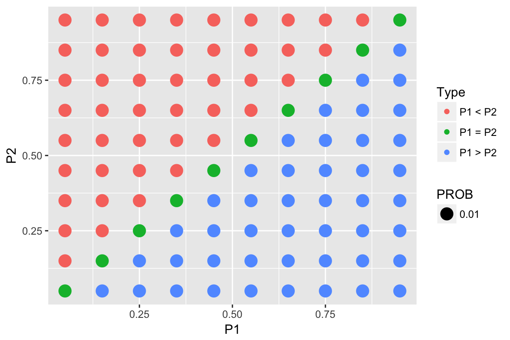

Beta Example
beta_example.RmdSelecting a Beta Curve
Here’s an example of choosing a beta curve to represent my opinions about a basketball player’s free-throw shooting proportion \(p\). Here are my initial thoughts:
My “best guess” at her shooting proportion is \(p = .7\) – that is, it is equally likely that \(p\) is smaller than .7, or that \(p\) is larger than .7.
I am pretty confident (with probability .9) that her shooting proportion is smaller than .85.
In other words, my prior median is .7 and my prior 90th percentile is .85.
The function beta.select will find the shape parameters of the beta curve that match these prior statements. I specify each quantile with a list (x is the value and p is the probability corresponding to the quantile).
library(TeachBayes)
quantile1 <- list(x = .7, p = .5)
quantile2 <- list(x = .85, p = .9)
(ab <- beta.select(quantile1, quantile2))## [1] 8.13 3.67So the beta curve with shape parameters 8.13 and 3.67 match my prior information.
Note: There is a Shiny app in the TeachBayes package to facilitate the selection of a beta curve. One uses sliders to input the prior median and prior 90th percentile and the app will show the beta curve that matches this information.
One runs this Shiny app by typing
ChooseBeta()
Checking My Beta Curve
To see if this is really a good representation of my prior beliefs, it is helpful to construct several graphs.
A 90% probability interval
I can construct the interval that will contain the middle 90% of the beta curve area.
beta_interval(.9, ab)
Compute beta probabilities
Or I can compute several beta probabilities of interest.
Here is the probability that p is smaller than .75
beta_area(0, .75, ab)
Simulate a beta curve
An alternative way to represent a beta curve is to simulate a large number of values from the distribution and summarize the simulated output.
Here I simulate 1000 values from my beta prior and construct a histogram of the simulated draws and put a density estimate on top.
p <- beta_data(ab)
ggplot(data.frame(p=p), aes(x=p)) +
geom_histogram(aes(y = ..density..),
fill="orange", color="black") +
geom_density()